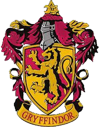

GRIFINÓRIA
Disse Gryffindor: "Nós vamos ensinar a todos aqueles com os bravos feitos do seu nome." Os alunos da Grifinória são tipicamente corajosos e ousados.
SONSERINA
Os membros da Sonserina têm como características, sobretudo, a ambição e a busca pela grandeza, por isso estão sempre se dedicando a alcançar e expandir metas e se empenhando com inteligência em diversas áreas da magia.

CORVINAL
valoriza a aprendizagem, sagacidade, sabedoria e intelecto. Além disso, os Corvinais podem ser bem excêntricos, originais e criativos.